# 图像增强
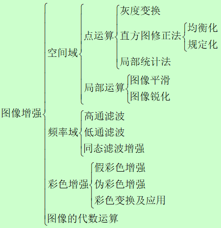# 灰度变换
灰度变换主要是针对人类视觉，不一定对算法有帮助。
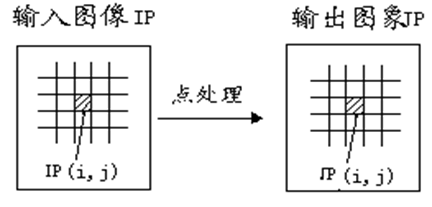表达式为：
输出值仅与有关
# 线性变换
图像求反
适用于增强嵌入图像暗色区域中的白色或灰色细节
线性变换
令图像f(i，j)的灰度范围为，线性变换后图像g(i，j)/的范围为[a´,b´]，如图，g(i，j)与f(i，j)之间的关系式为：
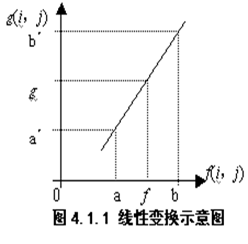
分段线性变换
为了突出感兴趣目标所在的灰度区间，相对抑制那些不感兴趣的灰度区间，可采用分段线性变换。
设原图像f(x,y)在[0，M_f],感兴趣目标的灰度范围在[a,b],欲使其灰度范围拉伸到[c,d],则对应的分段线性变换表达式为
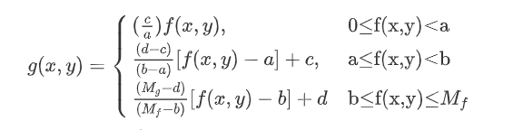
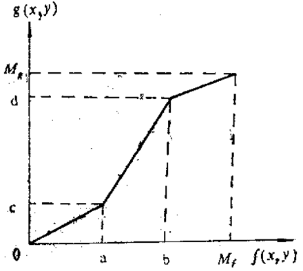
# 对数变换
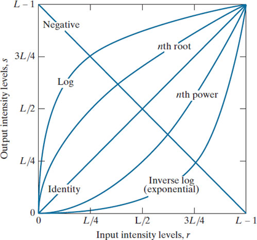
# 指数变换
# 伽马变换
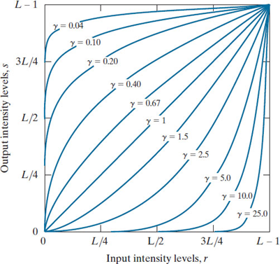
# 直方图处理
灰度直方图是一种灰度级的函数，它表示数字图象中每一灰度级与该灰度 出现的频数之间的对应关系。
- 一幅特定的图有唯一的直方图，但反之不成立。
- 直方图在一定程度上可以反映图像的状况，例如: 有时可以根 据直方图确定分割物体和背景的边界。
基于直方图的灰度变换不改变像素的位置，只改变像素的灰度值。
通过修改直方图可以达到增强图象的对比度、使感兴趣 的部分看得更清楚。常用的有一维灰度特征直方图，也有其他特征直方图， 还有多维直方图。
低对比度图像的灰度级较窄
高对比度图像中直方图分量 覆盖了很宽的灰度级范围
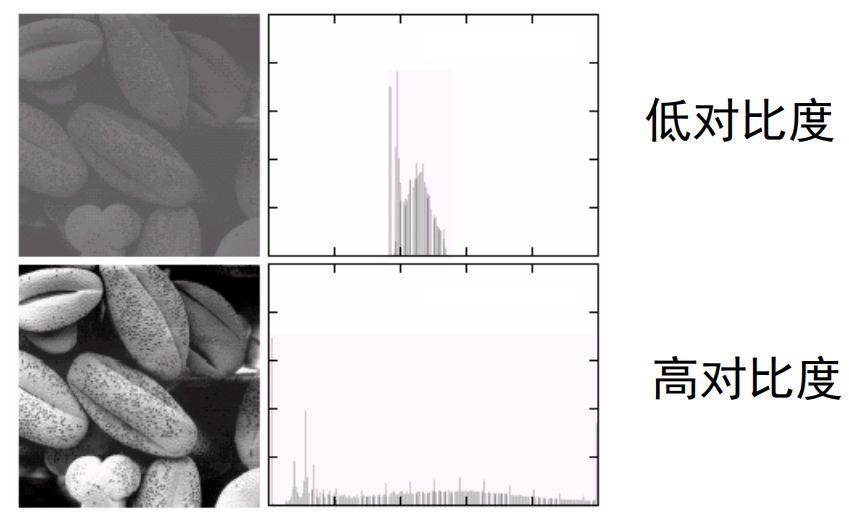
# 直方图均衡
该方法是基于直方图的灰度变换中常用的一种处理方法 。通常用直方图拉伸来执行直方图均衡处理 。
大致推导流程是根据概率密度函数角度来解析直方图，将原始的直方图看成某一个概率密度函数，通过一定变换到一个均匀分布概率密度函数，这个均匀分布概率密度函数就是均衡直方图。
将一幅图像灰度级可以看成区间是内随机变量。随机变量可以利用其概率密度函数（PDF）描述。令和分别代表随机变量和的概率密度函数，即是原图像的概率密度函数，是均衡化图像的概率密度函数。
由概率论知识可知变量的PDF可表达为：
图像处理中关键的变换函数：
遵循该变换函数的需要满足以下两个条件：
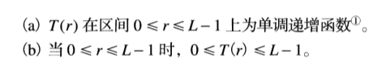根据莱布尼茨准则可得到
将该结果代入第一个公式，可得到
这个式子表明，灰度变换将得到一个随机变量，该随机变量由一个均匀PDF表征。
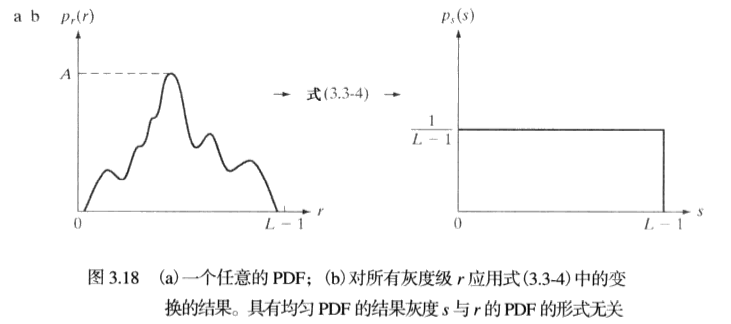连续灰度值案例
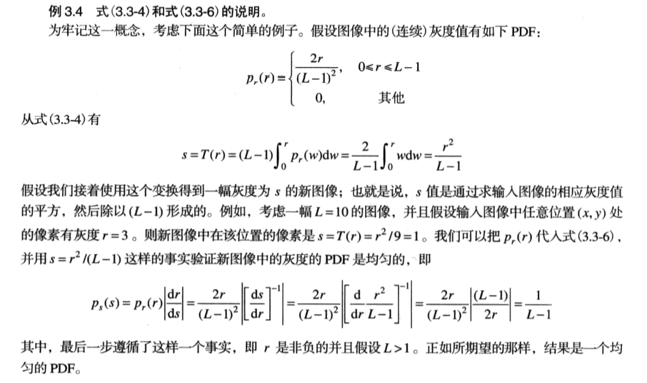离散灰度值案例
对于离散灰度值，函数可用灰度值出现的概率近似，即
其中是图像中像素总数，是灰度为的像素个数。
则变换函数的离散形式为
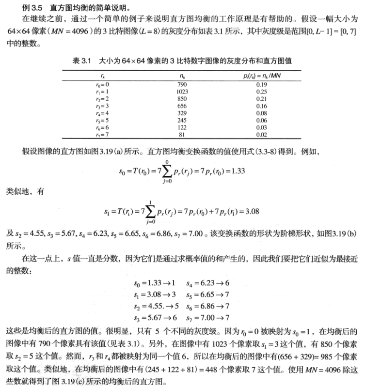 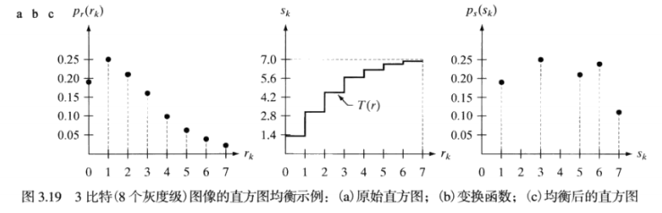
# 直方图匹配（规定化）
直方图均衡化产生一个变换函数，是特定针对整体均衡而设计，任何变换结果都是朝着均衡化结果而前进。但是有些应用中使用直方图均衡化是不合适，这时就需要用生成具有规定直方图的图像的方法是，这样方法就称为直方图匹配（规定化）
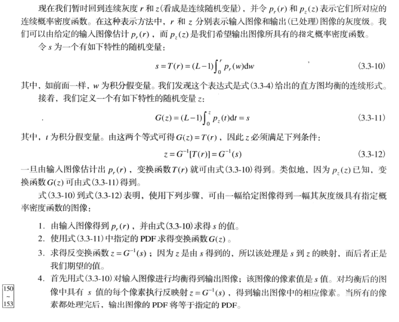大致含义是变换的结果不一定要求均衡，可能需要符合某种特定的直方图。就需要再基于均衡化基础上，再进行规定化，生成特定的直方图。
连续灰度值案例
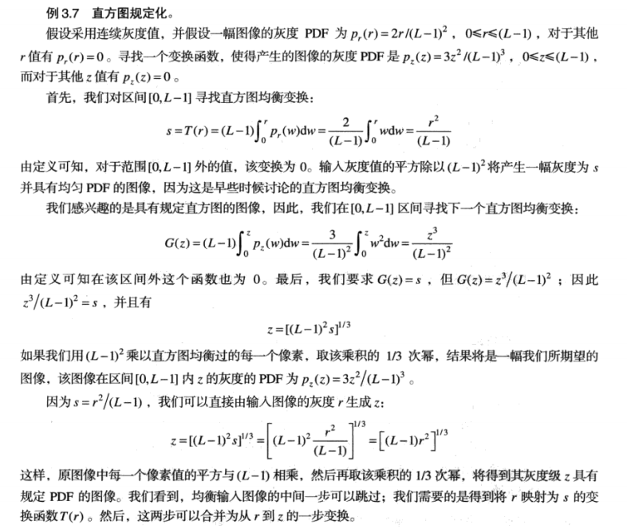离散灰度值案例
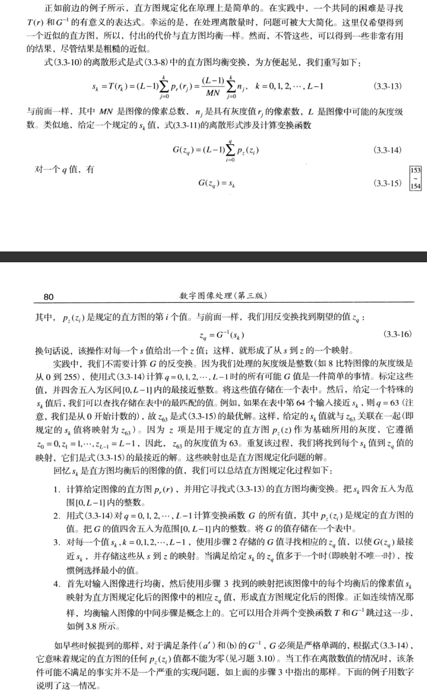 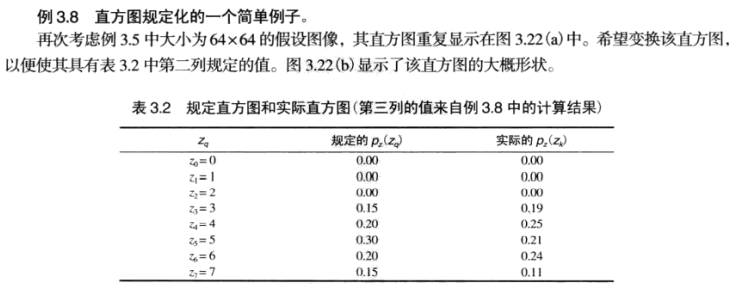 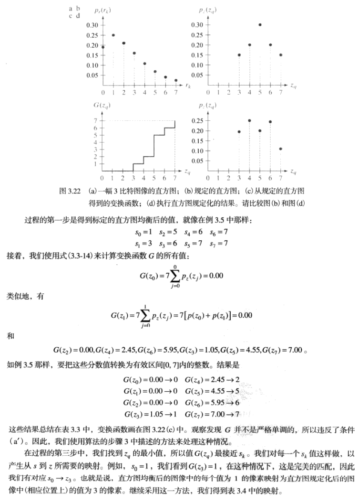 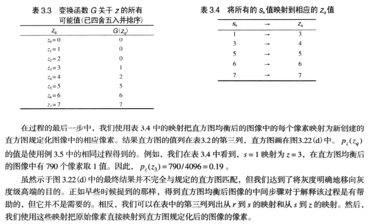
# 两者区别
← 图像变换 图像的矩阵，空间和统计描述 →